Saúde e prevenção
Água de qualidade e boas práticas de higiene ajudam a prevenir doenças transmitidas por água e alimentos contaminados.
Informação e conscientização para um futuro com água potável e saneamento para todos.
A água é essencial para a vida. Conhecer sua importância, entender os cuidados necessários e adotar hábitos conscientes são atitudes fundamentais para proteger a saúde e o meio ambiente.

O acesso à água potável e ao saneamento adequado é fundamental para a saúde, a dignidade e a qualidade de vida das pessoas. Quando falta água de qualidade ou o esgoto não é tratado, os efeitos aparecem na saúde, na rotina das famílias e no ambiente.
Água de qualidade e boas práticas de higiene ajudam a prevenir doenças transmitidas por água e alimentos contaminados.
Ter água em casa, esgoto tratado e ruas bem drenadas garante dignidade, conforto e mais tempo para estudar, trabalhar e conviver.
Usar a água com consciência e cuidar dos rios e nascentes protege o ambiente e garante água para as próximas gerações.
Cada tema foi organizado em uma página com linguagem simples, exemplos do dia a dia e fontes confiáveis para você aprofundar o estudo.
Entenda o que é água potável e por que a aparência não garante que a água seja segura.
Saiba mais sobre água potávelVeja, passo a passo, como a água é captada, tratada e distribuída.
Saiba mais sobre tratamento da águaAprenda a guardar a água com segurança e use o checklist interativo.
Saiba mais sobre armazenamento corretoConheça doenças relacionadas à água contaminada e como se proteger.
Saiba mais sobre saúde e prevençãoDescubra os quatro componentes do saneamento e sua importância para a comunidade.
Saiba mais sobre saneamento básicoDicas práticas para evitar desperdícios e um desafio para o seu dia a dia.
Saiba mais sobre economia de águaO Objetivo de Desenvolvimento Sustentável 6 faz parte da Agenda 2030 da ONU, formada por 17 objetivos. Seu foco é assegurar a disponibilidade e a gestão sustentável da água e do saneamento para todas as pessoas.
Garantir acesso universal à água segura e ao saneamento significa proteger a saúde, reduzir desigualdades e cuidar dos recursos naturais. É um compromisso que envolve poder público, prestadores de serviço e a própria população.
Água potável e saneamento para todos.
Pequenas atitudes fazem diferença na saúde da família e na proteção da água.
Mantenha caixas-d'água tampadas e higienizadas. Tampa bem vedada e limpeza periódica protegem a água armazenada.
Utilize recipientes limpos para armazenar água e evite o contato das mãos com a água guardada.
Evite desperdícios. Feche a torneira quando não estiver usando e corrija vazamentos.
Não descarte lixo em rios e córregos. Resíduos poluem a água e agravam enchentes.
Procure informações sobre a qualidade da água fornecida na sua região. Consulte a prestadora do serviço e a vigilância sanitária.
Responda 15 perguntas, veja explicações a cada resposta e descubra seu desempenho. Você pode refazer quantas vezes quiser.